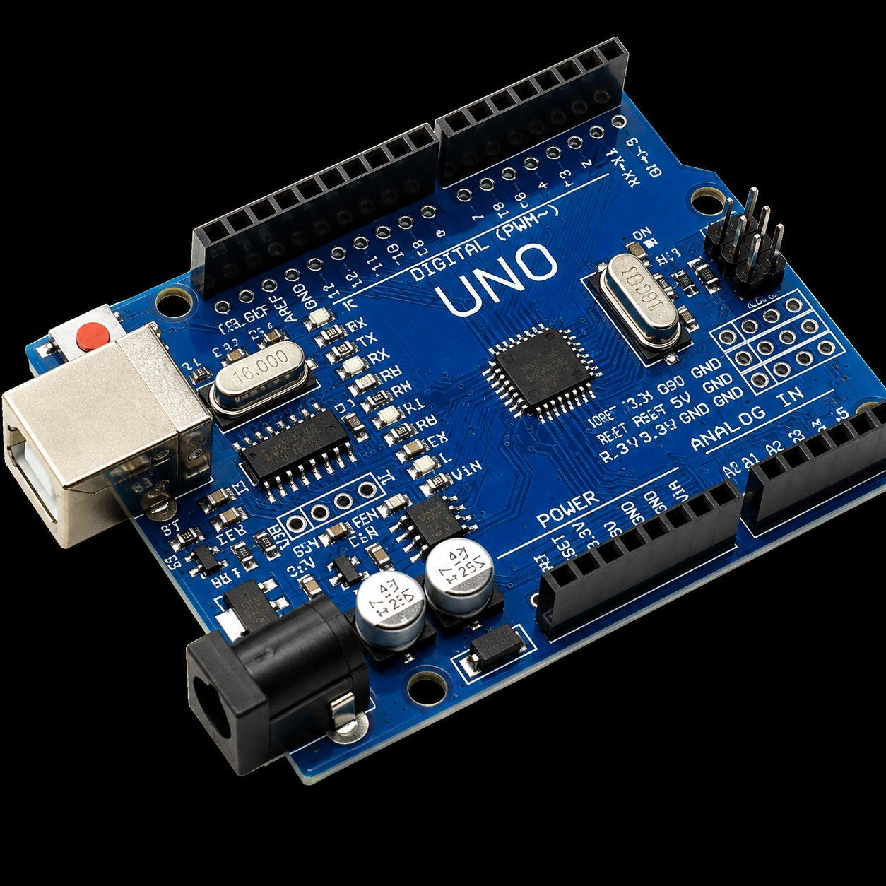
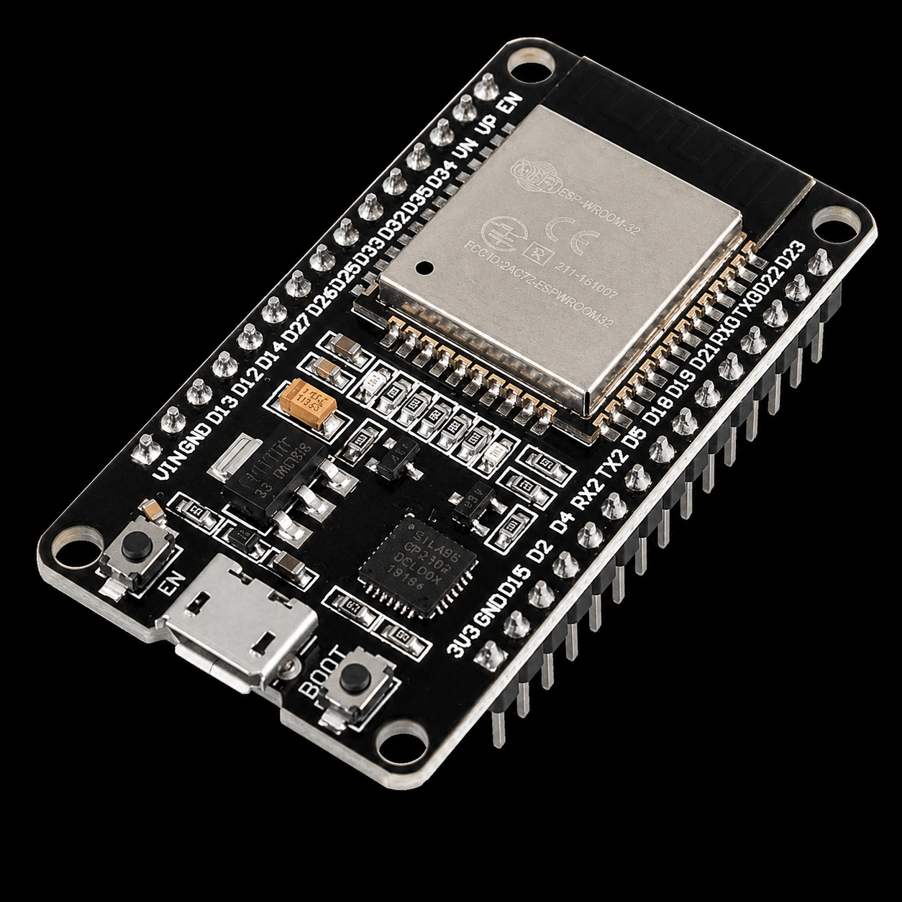
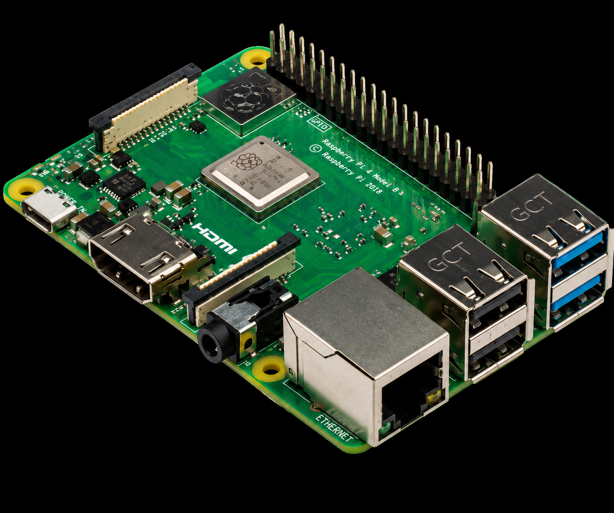
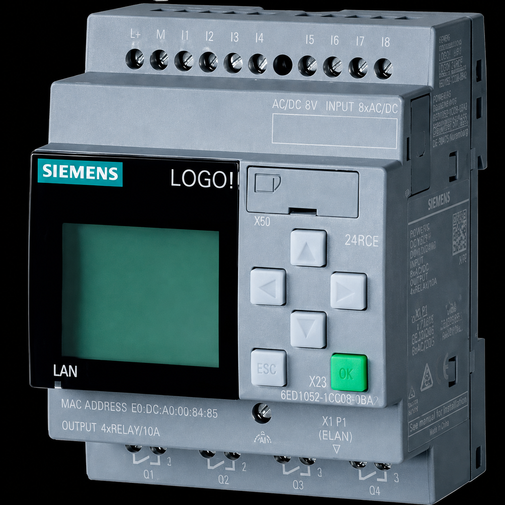
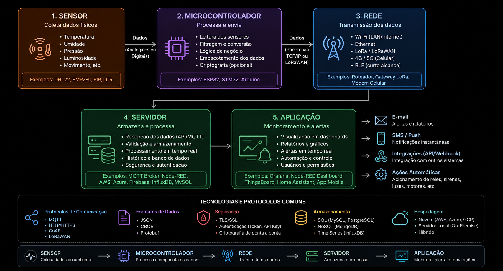
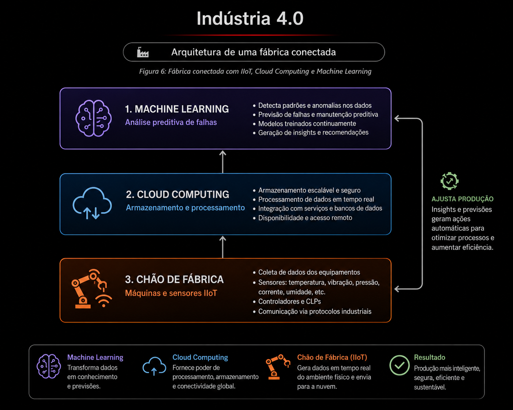

PLATAFORMAS PARA SENSORES
Sensores não funcionam sozinhos – eles precisam de plataformas para processar os sinais, comunicar dados e atuar sobre o ambiente. Conhecer as principais plataformas disponíveis é essencial para escolher a solução mais adequada para cada projeto.
Desde placas de prototipagem educacional até equipamentos industriais, cada plataforma possui características específicas de processamento, conectividade e aplicação.
Arduino

Figura 1: Arduino UNO, a placa de prototipagem mais popular do mundo
Plataforma de prototipagem eletrônica amplamente utilizada por sua simplicidade e comunidade ativa. Conecta-se a diversos sensores e atuadores através de portas analógicas e digitais.
Estrutura básica de programação: setup() (executada uma vez ao iniciar) e loop() (executada repetidamente).
Exemplo prático: Sensor de temperatura → Arduino → programa → ventilador.
ESP32

Figura 2: Módulo ESP32 com suporte nativo a Wi-Fi e Bluetooth
Microcontrolador com conectividade Wi-Fi e Bluetooth integradas, ideal para projetos de Internet das Coisas. Combina GPIOs, comunicação serial, interfaces digitais e capacidade de processamento local.
Exemplo prático: Sensor DHT22 → ESP32 → Wi-Fi → servidor na nuvem.
Raspberry Pi

Figura 3: Raspberry Pi, um computador completo de placa única
Computador de placa única com sistema operacional Linux e GPIOs. Suporta protocolos como I²C, SPI, UART e PWM, podendo ser utilizado como servidor local, gateway IoT, dashboard ou sistema de monitoramento.
A documentação oficial confirma a presença dessas interfaces nos GPIOs.
CLP (Controlador Lógico Programável)

Figura 4: CLP industrial com seus módulos de entrada e saída (I/O)
Equipamento fundamental na automação industrial. Recebe sinais de sensores, botões e transmissores, executa a lógica programada e aciona saídas como motores, válvulas e relés.
Funciona no princípio: Entradas → Lógica → Saídas, processando ciclos em milissegundos para controle em tempo real.
Internet das Coisas (IoT) e IIoT

Figura 5: Fluxo de dados desde o sensor físico até a análise em nuvem (IoT)
A IoT conecta objetos físicos para coletar, processar e trocar informações. Na indústria, chamamos de IIoT (Industrial Internet of Things), aplicando os mesmos conceitos em ambientes fabris.
Fluxo típico: Sensor → Microcontrolador → Rede → Servidor → Aplicação.
Permite monitoramento remoto, alertas em tempo real, análise de dados e manutenção preditiva, transformando a forma como gerenciamos processos.
Indústria 4.0

Figura 6: Fábrica conectada com IIoT, Cloud Computing e Machine Learning
Transformação baseada na integração de tecnologias digitais, automação, comunicação e análise de dados. Sensores fornecem os dados essenciais para que essas tecnologias funcionem de forma integrada.
Conceitos associados: IIoT, Big Data, computação em nuvem, inteligência artificial, robótica e sistemas ciber-físicos.
EXEMPLO COMPLETO DE APLICAÇÃO
Uma máquina industrial equipada com múltiplos sensores para monitoramento completo:
- Sensor de temperatura
- Sensor de vibração
- Sensor de corrente
- Sensor de presença
Os sensores coletam dados continuamente, o CLP processa as informações, um sistema supervisório acompanha o desempenho e os dados são armazenados para análise histórica.
Fluxo completo: Sensores → CLP → Rede Industrial → Supervisório → Banco de Dados → Dashboard.
Se a temperatura ou vibração ultrapassar limites pré-definidos, um alerta é emitido automaticamente, permitindo ação corretiva antes da falha.
CONCLUSÃO
Os sensores são a base da automação moderna e da IoT. Quando integrados a plataformas como Arduino, ESP32, Raspberry Pi e CLPs, permitem monitorar e controlar processos de forma inteligente e eficiente.
A evolução rumo à Indústria 4.0 depende diretamente do sensoriamento e da comunicação eficiente de dados. Compreender sensores é compreender a primeira etapa de qualquer sistema automatizado.
Mensagem final: O conhecimento sobre sensores e plataformas é a porta de entrada para o mundo da automação e IoT.